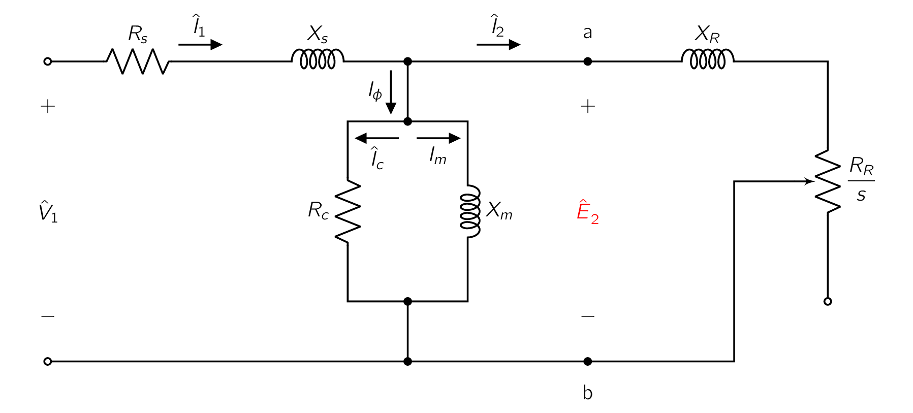
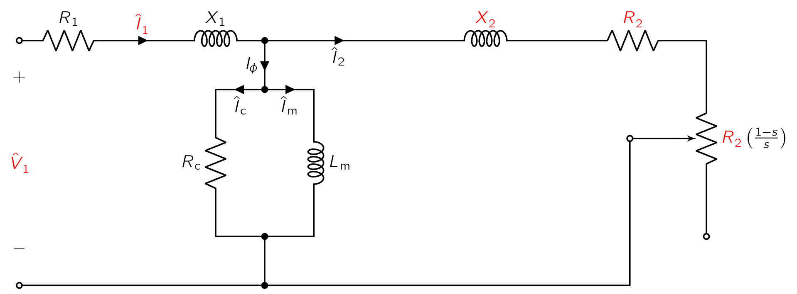
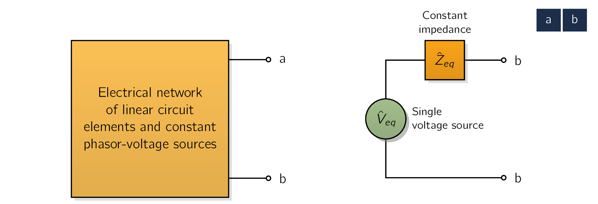
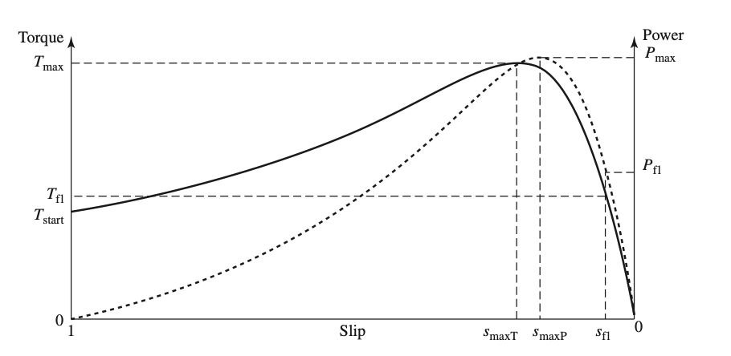
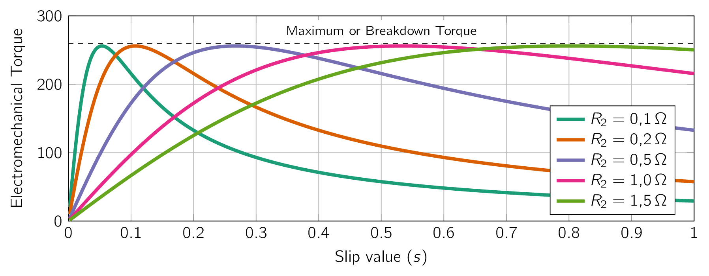

The considerations of flux and MMFMagneto-motive ForceThe magnetic pressure which drives magnetic flux in a magnetic circuit, and is the work done to move a unit magnetic pole. waves discussed previously can easily be translated to a steady-state equivalent circuit [161] The behaviour of a transient IMInduction Machinean AC electric motor in which the electric current in the rotor that produces torque is obtained by electromagnetic induction from the magnetic field of the stator winding. is significantly different and will be covered in M.Sc Drive Systems. for a poly-phase IMInduction Machinean AC electric motor in which the electric current in the rotor that produces torque is obtained by electromagnetic induction from the magnetic field of the stator winding..
In this derivation, only machines with symmetric poly-phase windings excited by balanced poly-phase voltages are considered. [162] Unbalanced phase input will be covered in M.Sc Drive Systems.
As in many other discussions of poly-phase devices, it helps to think of three-phase machines as being Y-connected, so currents are always line values and voltages always line-to-neutral values.
In this case, we can derive the equivalent circuit for a single-phase, with the understanding that the voltages and currents in the remaining phases can be found simply by an appropriate phase shift of those of the phase under study. [163] in the case of a three-phase machine. First, let us consider conditions in the stator. The synchronously-rotating air-gap flux wave generates balanced poly-phase counter-EMFElectro-motive ForceAn energy transfer to an electric circuit per unit of electric charge, measured in volts. Devices called electrical transducers provide an EMF by converting other forms of energy into electrical energy. Other types of electrical equipment also produce an emf, such as batteries, which convert chemical energy, and generators, which convert mechanical energy. This energy conversion is achieved by physical forces applying physical work on electric charges. However, electromotive force itself is not a physical forces in the phases of the stator. The stator terminal voltage differs from the counter EMFElectro-motive ForceAn energy transfer to an electric circuit per unit of electric charge, measured in volts. Devices called electrical transducers provide an EMF by converting other forms of energy into electrical energy. Other types of electrical equipment also produce an emf, such as batteries, which convert chemical energy, and generators, which convert mechanical energy. This energy conversion is achieved by physical forces applying physical work on electric charges. However, electromotive force itself is not a physical force by the voltage drop in the stator leakage impedance . Therefore:
| (6.8) |
where:
-
= Stator line-to-neutral terminal voltage,
-
= Counter EMFElectro-motive ForceAn energy transfer to an electric circuit per unit of electric charge, measured in volts. Devices called electrical transducers provide an EMF by converting other forms of energy into electrical energy. Other types of electrical equipment also produce an emf, such as batteries, which convert chemical energy, and generators, which convert mechanical energy. This energy conversion is achieved by physical forces applying physical work on electric charges. However, electromotive force itself is not a physical force (line-to-neutral) generated by the resultant air-gap flux,
-
= Stator current,
-
= Stator effective resistance, and
-
= Stator leakage reactance.
The polarity of the voltages and currents are shown in the equivalent circuit of Fig. 6.6.
The resultant air-gap flux is created by the combined MMFMagneto-motive ForceThe magnetic pressure which drives magnetic flux in a magnetic circuit, and is the work done to move a unit magnetic pole.s of the stator and rotor currents. Just as in the case of a transformer, the stator current can be resolved into two (2) components:
The load component () produces an MMFMagneto-motive ForceThe magnetic pressure which drives magnetic flux in a magnetic circuit, and is the work done to move a unit magnetic pole. which corresponds to the MMFMagneto-motive ForceThe magnetic pressure which drives magnetic flux in a magnetic circuit, and is the work done to move a unit magnetic pole. of the rotor current. The exciting component () is the additional stator current required to create the resultant air-gap flux and is a function of the EMFElectro-motive ForceAn energy transfer to an electric circuit per unit of electric charge, measured in volts. Devices called electrical transducers provide an EMF by converting other forms of energy into electrical energy. Other types of electrical equipment also produce an emf, such as batteries, which convert chemical energy, and generators, which convert mechanical energy. This energy conversion is achieved by physical forces applying physical work on electric charges. However, electromotive force itself is not a physical force . The exciting current can be resolved into a core-loss component () in phase with and a magnetising component () lagging by . In the equivalent circuit shown in Fig. 6.6, the exciting current can be accounted for by means of a shunt branch, formed by a core-loss resistance () and a magnetizing reactance () in parallel, connected across .
Both and are usually determined at rated stator frequency and for a value of close to the expected operating value; they are then assumed to remain constant for the small departures of associated with normal operation of the motor.
The equivalent circuit representing stator phenomena of Fig. 6.6 is almost the same as the the primary of a transformer. To complete our model, the effects of the rotor must be incorporated. From the point of view of the stator equivalent circuit of Fig. 6.6, the rotor can be represented by an equivalent impedance ()
| (6.9) |
corresponding to the leakage impedance of an equivalent stationary secondary. To complete the equivalent circuit, we must determine by representing the stator and rotor voltages and currents in terms of rotor quantities as referred to the stator. [164] Remember these circuits are not physically connected and therefore we need a mathematical relation to explain one circuits effect onto the other.
Referring Values
As we saw in ??, from the point of view of the primary, the secondary winding of a transformer can be replaced by an equivalent secondary winding having the same number of turns as the primary winding.
In a transformer where the turns ratio and the secondary parameters are known, this can be done by referring the secondary impedance to the primary by multiplying it by the square of the primary-to-secondary turns ratio. The resultant equivalent circuit is perfectly general from the point of view of primary quantities.
Similarly, in the case of a poly-phase IMInduction Machinean AC electric motor in which the electric current in the rotor that produces torque is obtained by electromagnetic induction from the magnetic field of the stator winding., if the rotor were to be replaced by an equivalent rotor with a poly-phase winding with the same number of phases and turns as the stator but producing the same mmf and air-gap flux as the actual rotor, the performance as seen from the stator terminals would be unchanged.
This concept, which we will adopt here, is especially useful in modelling squirrel-cage rotors for which the identity of the rotor “phase windings” is in NOT obvious.
The rotor of an IMInduction Machinean AC electric motor in which the electric current in the rotor that produces torque is obtained by electromagnetic induction from the magnetic field of the stator winding. is short-circuited, and therefore the impedance seen by induced voltage is simply the rotor short-circuit impedance. Consequently the relation between the slip-frequency leakage impedance () of the equivalent rotor and the slip-frequency leakage impedance of the actual rotor needs to be:
| [](6.10) |
where is the effective turns ratio between the stator winding and that of the actual rotor winding. Here the subscript refers to quantities associated with the referred rotor. Therefore is the voltage induced in the equivalent rotor by the resultant air-gap flux, and is the corresponding induced current.
When one is concerned with the actual rotor currents and voltages, the turns ratio must be known in order to convert back from equivalent-rotor quantities to those of the actual rotor. However, for the purposes of studying IMInduction Machinean AC electric motor in which the electric current in the rotor that produces torque is obtained by electromagnetic induction from the magnetic field of the stator winding. performance as seen from the stator terminals, there is no need for this conversion and a representation in terms of equivalent-rotor quantities is fully adequate. Thus an equivalent circuit based upon equivalent-rotor quantities can be used to represent both coil-wound and squirrel-cage rotors.
Taking Slip into Account
Having taken care of the effects of the stator-to-rotor turns ratio, we next must take into account the relative motion between the stator and the rotor with the objective of replacing the actual rotor and its slip-frequency voltages and currents with an equivalent stationary rotor with stator-frequency voltages and currents.
Consider first the slip-frequency leakage impedance of the referred rotor.
| (6.11) |
where
-
is the referred rotor resistance, and
-
is the Referred rotor leakage reactance at slip frequency.
Here has been defined as the referred rotor leakage reactance at stator frequency
Given the actual rotor frequency is , has been converted to the slip-frequency reactance simply by multiplying by the slip (). The slip-frequency equivalent circuit of one phase of the referred rotor is shown in Fig. 6.7. This is the equivalent circuit of the rotor as seen in the slip-frequency rotor reference frame. We next observe the resultant air-gap MMFMagneto-motive ForceThe magnetic pressure which drives magnetic flux in a magnetic circuit, and is the work done to move a unit magnetic pole. wave is produced by the combined effects of the stator current () and the equivalent load current (). Similarly, it can be expressed in terms of the stator current and the equivalent rotor current ().
These two (2) currents are equal in magnitude since is defined as the current in an equivalent rotor with the same number of turns per phase as the stator. Because the resultant air-gap MMFMagneto-motive ForceThe magnetic pressure which drives magnetic flux in a magnetic circuit, and is the work done to move a unit magnetic pole. wave is determined by the phasor sum of the stator current and the rotor current of either the actual or equivalent rotor, and must also be equal in phase [165] at their respective electrical frequencies. and therefore we can write:
| (6.12) |
As a final note, consider the resultant flux wave inducing both the slip-frequency EMFElectro-motive ForceAn energy transfer to an electric circuit per unit of electric charge, measured in volts. Devices called electrical transducers provide an EMF by converting other forms of energy into electrical energy. Other types of electrical equipment also produce an emf, such as batteries, which convert chemical energy, and generators, which convert mechanical energy. This energy conversion is achieved by physical forces applying physical work on electric charges. However, electromotive force itself is not a physical force induced in the referred rotor () and the stator counter EMFElectro-motive ForceAn energy transfer to an electric circuit per unit of electric charge, measured in volts. Devices called electrical transducers provide an EMF by converting other forms of energy into electrical energy. Other types of electrical equipment also produce an emf, such as batteries, which convert chemical energy, and generators, which convert mechanical energy. This energy conversion is achieved by physical forces applying physical work on electric charges. However, electromotive force itself is not a physical force (). If it were NOT for the effect of speed, these voltages would be equal in magnitude since the referred rotor winding has the same number of turns per phase as the stator winding. However, because the relative speed of the flux wave with respect to the rotor is times its speed with respect to the stator, the relation between the magnitudes of these EMFElectro-motive ForceAn energy transfer to an electric circuit per unit of electric charge, measured in volts. Devices called electrical transducers provide an EMF by converting other forms of energy into electrical energy. Other types of electrical equipment also produce an emf, such as batteries, which convert chemical energy, and generators, which convert mechanical energy. This energy conversion is achieved by physical forces applying physical work on electric charges. However, electromotive force itself is not a physical forces is
| (6.13) |
We can furthermore argue that given the phase angle between each of these voltages and the resultant flux wave is , then these two (2) voltages must also be equal in a phasor sense at their respective electrical frequencies. Therefore
| (6.14) |
Division of Eq. (6.14) by Eq. (6.12) and use of Eq. (6.11) then gives:
| (6.15) |
We have achieved our objective.

is the impedance of the equivalent stationary rotor which appears across the load terminals of the stator equivalent circuit of Fig. 6.6. The final result is shown in the single-phase equivalent circuit of Fig. 6.8. The combined effect of shaft load and rotor resistance appears as a reflected resistance (), a function of slip and therefore of the mechanical load. The current in the reflected rotor impedance equals the load component of stator current; the voltage across this impedance equals the stator voltage .
When rotor currents and voltages are reflected into the stator, their frequency is also changed to stator frequency.
All rotor electrical phenomena, when viewed from the stator, become stator-frequency phenomena, because the stator winding simply sees MMFMagneto-motive ForceThe magnetic pressure which drives magnetic flux in a magnetic circuit, and is the work done to move a unit magnetic pole. and flux waves travelling at synchronous speed.
The single-phase equivalent circuit shown in Fig. 6.8 can be used to determine a wide variety of steady-state performance characteristics of poly-phase IMInduction Machinean AC electric motor in which the electric current in the rotor that produces torque is obtained by electromagnetic induction from the magnetic field of the stator winding.s.
In practice, the equivalent-circuit parameters may be a function of operating conditions.
Specifically, temperature will affect the values of the resistances and the rotor parameters of a squirrel-cage motor may change with slip.
The equivalent circuit shows that the total power transferred across the air gap () from the stator is
| (6.16) |
where is the number of stator phases. The total rotor loss () , can be calculated from the loss in the equivalent rotor as:
| (6.17) |
Given we know , we can write Eq. (6.17) as
| (6.18) |
The electromechanical power () developed by the motor can now be determined by subtracting the rotor power dissipation of Eq. (6.18) from the air-gap power ():
| (6.19) |
Comparing Eq. (6.16) with Eq. (6.19) gives us:
| (6.20) |
We see then that, of the total power delivered across the air gap to the rotor, the fraction () is converted to mechanical power and the fraction is dissipated as loss in the rotor conductors. Similarly, the power dissipated in the rotor can be expressed in terms of the electromechanical power as
| (6.21) |
From Eq. (6.20) and Eq. (6.21) , it is evident that an IMInduction Machinean AC electric motor in which the electric current in the rotor that produces torque is obtained by electromagnetic induction from the magnetic field of the stator winding. operating at high slip is an inefficient device. The equivalent of Fig. 6.9 emphasizes the relationship between rotor loss and electromechanical power. The rotor power dissipation per stator phase corresponds to the power dissipated in the resistance while the electromechanical power per stator phase is equal to the power delivered to the resistance .

A three-phase, two-pole, IMInduction Machinean AC electric motor in which the electric current in the rotor that produces torque is obtained by electromagnetic induction from the magnetic field of the stator winding. is observed to be operating at a speed of with an input power of and a terminal current of . The stator-winding resistance is . Calculate the power dissipated in rotor.
The power dissipated in the stator winding is given by
Hence the air-gap power is
The synchronous speed of this machine can be found from:
and therefore the slip is . Therefore:
The electromechanical torque () corresponding to the power () can be obtained by recalling that mechanical power equals torque times angular velocity (i.e., ). Therefore,
| [](6.22) |
where is in , in , is in . Use of Eq. (6.19) and Eq. (6.20) leads to:
| [](6.23) |
where is the number of phases. We can derive the synchronous mechanical angular velocity () as:
| [](6.24) |
Eq. (6.23) can be written in terms of the electrical frequency () as
| [](6.25) |
The mechanical torque () and power () are NOT the output values available at the shaft because friction, windage, and stray-load losses remain to be accounted for. It is obviously correct to subtract friction, windage, and other rotational losses from or and it is generally assumed that stray load effects can be subtracted in the same manner.
The remainder is available as output power from the shaft for useful work. Therefore:
| (6.26) |
where and are the power and torque associated with the friction, windage, and remaining rotational losses. Analysis of the transformer equivalent circuit is often simplified by either neglecting the magnetizing branch entirely or adopting the approximation of moving it out directly to the primary terminals. Such approximations are NOT used in the case of IMInduction Machinean AC electric motor in which the electric current in the rotor that produces torque is obtained by electromagnetic induction from the magnetic field of the stator winding.s under normal running conditions because the presence of the air gap results in a relatively lower magnetizing impedance and correspondingly a relatively higher exciting current
and because the leakage reactances are also higher.
Some simplification of the IMInduction Machinean AC electric motor in which the electric current in the rotor that produces torque is obtained by electromagnetic induction from the magnetic field of the stator winding. equivalent circuit results if the core-loss resistance is omitted and the associated core-loss effect is deducted from or at the same time that rotational losses and stray load effects are subtracted. The equivalent circuit then becomes that of Fig. 6.10a or b, and the error introduced is often relatively insignificant. Such a procedure also has an advantage during motor testing, for then the no-load core loss need not be separated from friction and windage. These last circuits are used in subsequent discussions.
When torque and power relations are to be emphasized, considerable simplification results from application of Thévenin’s theorem to the IMInduction Machinean AC electric motor in which the electric current in the rotor that produces torque is obtained by electromagnetic induction from the magnetic field of the stator winding. equivalent circuit.
Any linear electrical circuit can be simplified to an equivalent circuit with a single voltage source () in series with a single resistor () or impedance (). This simplified model is a powerful tool for analyzing complex circuits, especially when a specific part of the circuit is subject to change, as it avoids re-analyzing the entire network each time.
This theorem also shows its usefulness when we want to understand the voltage drop across the two terminals of a device as for most practical applications this is the only thing we care about.

In its general form, Thevenin’s theorem permits the replacement of any network of linear circuit elements and complex voltage sources, such as viewed from two terminals a and b shown in Fig. 6.11a, by a single complex voltage source in series with a single impedance , which is shown in Fig. 6.11b.
The Thévenin-equivalent voltage is that appearing across terminals a and b of the original network when these terminals are open-circuited.
the Thévenin-equivalent impedance is that viewed from the same terminals when all voltage sources within the network are set equal to zero.
For application to the IMInduction Machinean AC electric motor in which the electric current in the rotor that produces torque is obtained by electromagnetic induction from the magnetic field of the stator winding. equivalent circuit, points a and b are taken as those so designated in Fig. 6.11a and b. The equivalent circuit then assumes the forms given in Fig. 6.12 where Thévenin’s theorem has been used to transform the network to the left of points a and b into an equivalent voltage source in series with an equivalent impedance . According to Thevenin’s theorem, the equivalent source voltage is the voltage that would appear across terminals a and b of Fig. 6.10 with the rotor circuits removed.
The result is a simple voltage divider and therefore:
| [](6.27) |
For most IMInduction Machinean AC electric motor in which the electric current in the rotor that produces torque is obtained by electromagnetic induction from the magnetic field of the stator winding.s, negligible error results from neglecting the stator resistance () in Eq. (6.27) . The Thevenin-equivalent stator impedance () is the impedance between terminals a and b of Fig. 6.10 viewed toward the source with the source voltage set equal to zero (0) and [166] or equivalently replaced by a short circuit. therefore is:
| [](6.28) |
Although this is a very commonly used approximation, its effect can be readily incorporated in the derivations presented here by replacing the magnetizing reactance () by the magnetising impedance (), equal to the parallel combination of the core-loss resistance () and the magnetizing reactance ().
From the Thevenin-equivalent circuit (Fig. 6.12):
| [](6.29) |
and therefore from the torque expression given in Eq. (6.25) we can see:
Eq. ([]) expresses the electromechanical torque as a function of slip. The general shape of a typical torque-speed or torque-slip curve of an IMInduction Machinean AC electric motor in which the electric current in the rotor that produces torque is obtained by electromagnetic induction from the magnetic field of the stator winding. connected to a constant-voltage, constant-frequency source is shown in Figs. 6.13 and 6.14.

During normal motor operation, the rotor revolves in the direction of rotation of the magnetic field produced by the stator currents, the speed is between zero and synchronous speed, and the corresponding slip is between 1.0 and 0. [167] labeled "Motor region" in Fig. 6.12.
Motor starting conditions are those of . To obtain operation in the region of greater than 1, [168] This corresponds to a negative motor speed. the motor must be driven backward, against the direction of rotation of its magnetic field, by a source of mechanical power capable of counteracting the electromechanical torque . The chief practical usefulness of this region is in bringing motors to a quick stop by a method called plugging. By interchanging two stator leads in a three-phase motor, the phase sequence, and hence the direction of rotation of the magnetic field, is reversed suddenly and what was a small slip before the phase reversal becomes a slip close to 2.0 following the reversal. The motor speed therefore becomes negative with respect to the synchronous stator flux wave and the resultant positive torque causes the motor slip to decrease. If the motor remains connected to the line, the motor will eventually accelerate towards a slip of 0. However, the motor can easily be stopped if it is disconnected from the line at zero speed before the motor can start in the other direction.
Accordingly, the region from to is labeled “Braking region” in Fig. 6.13.
An IMInduction Machinean AC electric motor in which the electric current in the rotor that produces torque is obtained by electromagnetic induction from the magnetic field of the stator winding. will operate as a generator if its stator terminals are connected to a poly-phase voltage source and its rotor is driven above synchronous speed [169] This results in a negative slip by a prime mover, as shown in Fig. 6.13. The source fixes the synchronous speed and supplies the reactive power input required to excite

the air-gap magnetic field. One such application is that of an induction generator connected to a power system and driven by a wind turbine. Fig. 6.13 shows typical torque and power characteristics for an IMInduction Machinean AC electric motor in which the electric current in the rotor that produces torque is obtained by electromagnetic induction from the magnetic field of the stator winding. operating in the motor region (). In the figure, the full-load operating conditions are indicated by slip , torque , and power . We see that the maximum torque (and power) capability is typically a few times that of its full-load value and that they occur at a significantly higher slip. The maximum electromechanical torque, or breakdown torque, occurs at slip while the maximum power occurs at a somewhat smaller slip . An expression for can be obtained readily from circuit considerations. As can be seen from Eq. (??) the electromechanical torque is a maximum when the power delivered to in Fig. 6.12a is a maximum. It can be shown that this power will be greatest when the impedance of equals the magnitude of the impedance between it and the constant equivalent voltage . Thus, maximum electromechanical torque will occur at a value of slip s<sub>maxT</sub> for which
| (6.30) |
The slip at maximum torque is therefore
| (6.31) |
and the corresponding torque is, from Eq. 6.36,
| (6.32) |
Under the conditions of constant-frequency operation, a typical conventional IMInduction Machinean AC electric motor in which the electric current in the rotor that produces torque is obtained by electromagnetic induction from the magnetic field of the stator winding. with a squirrel-cage rotor is substantially a constant-speed motor

having about 10 percent or less drop in speed from no load to full load. In the case of a wound-rotor IMInduction Machinean AC electric motor in which the electric current in the rotor that produces torque is obtained by electromagnetic induction from the magnetic field of the stator winding., speed variation can be obtained by inserting external resistance in the rotor circuit; the influence of increased rotor resistance on the torque- speed characteristic is shown by the dashed curves in Fig. 6.16. For such a motor, significant speed variations can be achieved as the rotor resistance is varied. Similarly, the zero-speed torque variations seen in Fig. 6.16 illustrate how the starting torque of a wound-rotor IMInduction Machinean AC electric motor in which the electric current in the rotor that produces torque is obtained by electromagnetic induction from the magnetic field of the stator winding. can be varied by varying the rotor resistance. Notice from Eqs. 6.38 and 6.39 that the slip at maximum torque is directly proportional to rotor resistance but the value of the maximum torque is independent of . When is increased by inserting external resistance in the rotor of a wound- rotor motor, the maximum electromechanical torque is unaffected but the speed at which it occurs can be directly controlled. This result can also be seen by observing that the electromechanical torque expression of Eq. ([]) is a function of the ratio . Thus, the torque is unchanged as long as the ratio remains constant. In applying the IMInduction Machinean AC electric motor in which the electric current in the rotor that produces torque is obtained by electromagnetic induction from the magnetic field of the stator winding. equivalent circuit, the ideal considerations on which it is based should be kept in mind. This is particularly necessary when investigations are carried out over a wide speed range,
Moreover, the rotor currents are at slip frequency, which varies from stator frequency at zero speed to a low value at full-load speed. The current distribution in the rotor bars of squirrel-cage motors may vary significantly with frequency, giving rise to significant variations in rotor resistance. In fact, motor designers can tailor the shape of the rotor bars in squirrel-cage motors to obtain various speed-torque characteristics.
Errors from these causes can be kept to a minimum by using equivalent-circuit parameters corresponding as closely as possible to those of the proposed operating conditions.
-
¶
- EMFElectro-motive Force
An energy transfer to an electric circuit per unit of electric charge, measured in volts. Devices called electrical transducers provide an EMF by converting other forms of energy into electrical energy. Other types of electrical equipment also produce an emf, such as batteries, which convert chemical energy, and generators, which convert mechanical energy. This energy conversion is achieved by physical forces applying physical work on electric charges. However, electromotive force itself is not a physical force
-
¶
- IMInduction Machine
an AC electric motor in which the electric current in the rotor that produces torque is obtained by electromagnetic induction from the magnetic field of the stator winding.
-
¶
- MMFMagneto-motive Force
The magnetic pressure which drives magnetic flux in a magnetic circuit, and is the work done to move a unit magnetic pole.